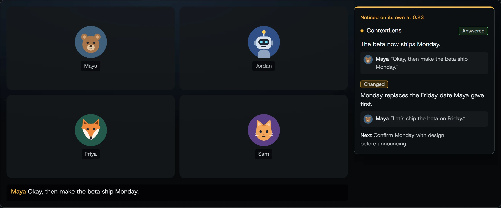

Meeting copilot · runs on your own computer
Lost the thread? Press one key.
ContextLens listens to your meeting. Press, and a card shows what was said, who said it, and what changed, quoted straight from the conversation.
Desktop and smart glasses · Open source · Nothing leaves your machine

How it works
- 1
It listens
Transcribes the meeting and labels who is speaking, all on your machine.
- 2
You press
One hotkey on desktop, a tap on glasses. When something changes, it speaks up on its own.
- 3
You read one card
Short, with quotes and who said them. If nobody said it, the card says so.
Two ways to run it
Built for people who find live conversation hard to track, including introverted and neurodivergent people.


Try a card
Pick a question. The card answers from the conversation and marks the lines it used.
- Who said what
- The quote and the speaker.
- What changed
- Friday became Monday, and who moved it.
- Not sure
- It says “not enough information” instead of guessing.
- t1MayaLet’s ship the beta on Friday.
- t2JordanDesign still owes the onboarding screens.
- t3JordanThen QA needs two days, minimum.
- t4MayaOkay, make that Monday.
- Who
- Maya
- Where
- t1, t4
- Read as
- An update, not a contradiction
Tested on long real meetings
161 held-out cases from QMSum and AMI, with conflicts 20 to 60 turns apart.
- Conflicts caught
- 87%Single agent 0%
- Found evidence 10+ turns back
- 60%Single agent 0%
- Answers graded correct
- 65%Single agent 35%
- Contradiction F1 on DECODE
- 0.913
- Baseline 0.753, on 1,000 pairs
- False alerts
- Halved
- Against that baseline
- Time per check
- 45 ms
- On every press
Under the hood
A small local model, and the system around it that keeps it honest.
Streaming speech
whisper.cpp, C++, gRPC.
Speaker labels
Who is talking.
Memory
Builds as the meeting goes.
Contradiction check
ModernBERT NLI and a fine-tuned DeBERTa, pair by pair, in code.
Evidence first
Code picks and cites the turns; the model only words the answer.
Hybrid retrieval
BM25, vectors, a bge cross-encoder reranker.
Evidence guard
Drops claims no earlier turn backs.
Local model
4B, through Ollama, on your machine.
See it in 80 seconds
No install. A short meeting plays in your browser and the cards appear on their own.